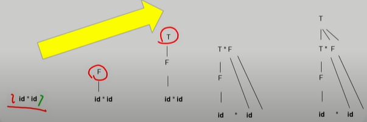
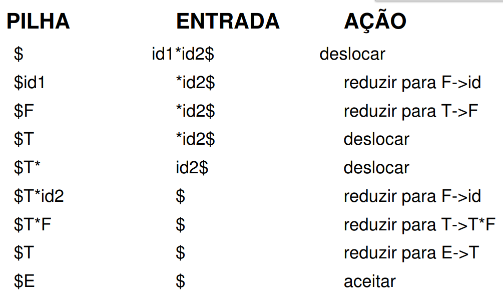

Também conhecida como buttom-up suas principais características são:
-
Corresponde a construção de uma arvore de derivação para uma cadeia de
entrada a partir das folhas em direção a raiz.
-
Constrói a árvore de derivação de baixo para cima, das folhas para raiz.
- Produz uma derivação mais à direita para uma cadeia de entrada.
- Processo de redução de uma string w para o símbolo inicial da gramática.
- Em cada passo da redução, uma sub-string é associada com o corpo de uma
produção e obtém-se a “cabeça” dessa produção.
- Decisões chave: quando reduzir e quais produções utilizar − Por definição,
redução é o inverso da derivação.

Analisadores shift-reduce:
Forma de análise ascendente onde uma pilha contém símbolos da gramática e um
buffer de entrada contém o restante da cadeia a ser reconhecida sintaticamente.
O símbolo $ é usado para marcar o fim da pilha e o último caractere da entrada.
Nos exemplos seguintes inicialmente, a pilha está vazia e a cadeia w representa a entrada.
Durante o parsing (da esquerda para direita), o analisador desloca (shift) zero ou mais
símbolos de entrada na pilha, até que está pronto para reduzir (reduce) uma string B (no
topo da pilha) para a “cabeça” da produção apropriada.
O analisador sintático repete esse ciclo até encontrar um erro (nenhuma produção é
encontrada) ou até que a pilha contém o símbolo de início e a entrada está vazia.

No exemplo acima temos:
Deslocar (shift): deslocar o próximo símbolo da entrada no topo da pilha
Reduzir (reduce): a parte (mais à direita) da string a ser reduzida está no topo da pilha.
Decidir com qual não terminal substituir a string.
Aceitar: analisador sintático finalizou com sucesso
Error: erro sintático.
Analisadores LR:
São classificados em SLR, que são fáceis de implementar e LALR
são mais complexos.